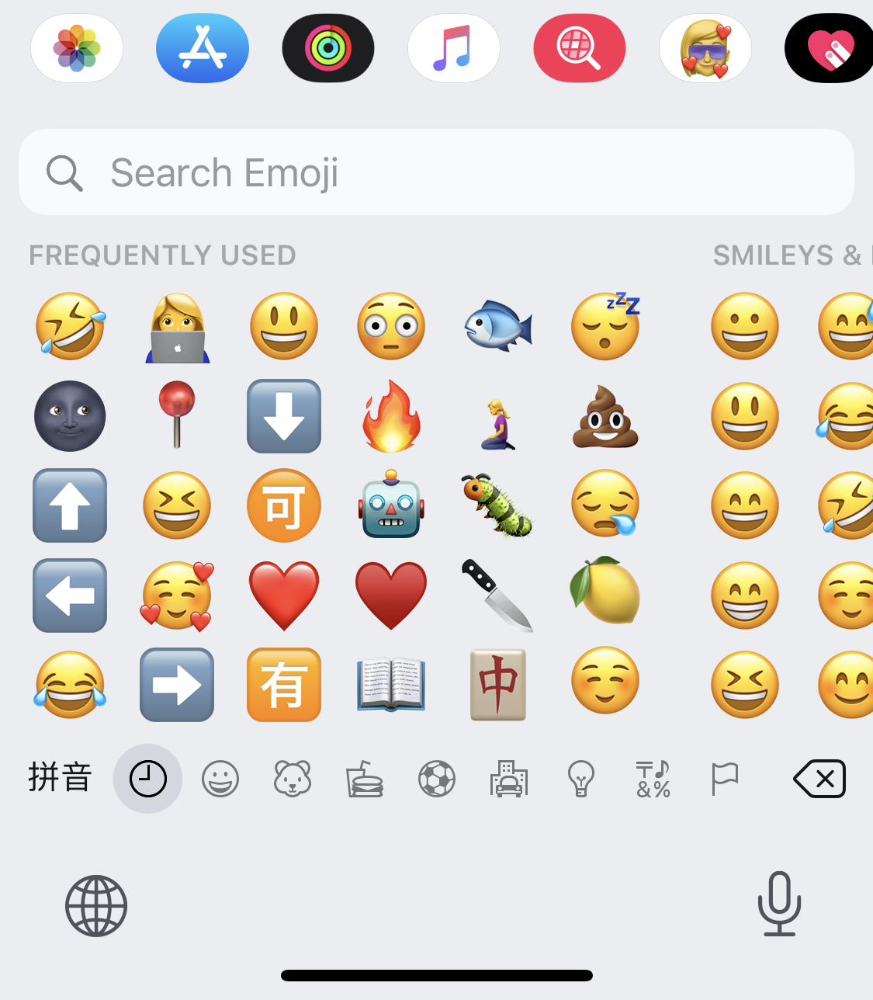

I have been super excited about WWDC this year. I installed the iOS/iPadOS/macOS developer beta this Monday (and watchOS yesterday) and have kept playing with it since then. They are absolutely the best “toys” I have this year. It’s nothing astonishing, but it does have numerous great updates that could make our life (at least mine) much easier and smoother. It’s really difficult for me to rank them since there are so many amazing things. So I just “classified” them into different levels based on my preferences.
Over the top
All about privacy
I do admire all the efforts Apple has made in the field of privacy. We have brought more and more concerns about the use and value of the data of personal information these years and kept seeking the solutions to it. This year’s WWDC has strengthened privacy a lot, like in Map and Translate, and also proposed several features to deal with our data.
The above picture shows the four principles Apple has with privacy.
- Location data: instead of a precise location, you could choose to just share the approximate location with apps.
- Recording indicator: there will be a yellow indicator in the status bar while you’re recording via mic or camera.

- Tracking control: there will be a policy to require the apps to ask for permission before tracking.
- App privacy: Apple will require the apps to provide information about data collected and shared with other companies on product pages in the App Store.
- Safari: it will show the information about how the website is tracking you.
- Clipboard: it will show the notification, “copy from XXXX”, whenever the app you’re using is trying to read your clipboard. It’s brought us some information interesting that some apps, like iMessage and Twitter, will only read the clipboard when you want to paste something, while some will copy from the clipboard as soon as you open it, like Starbuck (lol) and Weibo, while some will do it every 1-3 keystrokes, like TikTok lol.
Finally have it!
App Library

I have tons of apps on my iPhone (shown in the above picture, which is just a part of one category) which makes it difficult for me to “find” the one I need. So I always use search or Siri (lol) to open the app. And now we finally have the library for apps.
The first thing I like about it is that we could remove the apps from the Home Screen and add it to the library, so we could just keep the ones used most frequently on the screen. You could simply get there by swiping the last Home Screen from right to left. And the first look of the library is a navigation view which has categorized all your apps automatically.
It has the “Suggestions” (which you are likely to need next) and “Recently Added” on the top. And each category box has three apps in the larger icon which could be launched directly with a tap. They are the apps used most frequently under that category. And if you tap on the area with the four smaller icons, it will open the whole category and you could see all your apps under it.
If you swipe down or just tap on the search bar, you could see the list of your apps in alphabetical order. What is sweet is that it also sort the apps with the name in Chinese based on pinyin.
And you could also choose to hide a whole page of the Home Screen: go to the view of “edit Home Screen” -> tap the bottom of the page -> select or unselect the page.
Widget

I love the widget sooo much, especially the ones for Calendar, Notes, Reminder, Music, News, and Podcasts (it’s almost everything we have for now lol).
And the smart stack is amazing. We could drag the smart stack from the widgets gallery, or simply put the widgets in the same size together which will generate the smart stack automatically. You could swipe up and down to switch the widget you want to show in the smart stack, and it could also switch the widgets automatically, like showing the news in the morning and switching to the Calendar in the day while there is an appointment.
Safari
I had been always using Chrome until I found that I could share the page directly to iBook which will be saved as a PDF file. This is a great way to read the page since you could do all the marks on it. And Safari just becomes much powerful this time. It’s faster, it has built-in translation, it
s bring lots of powerful extensions and will allow you to decide how long the permission you want to give to that extension.

You could customize the home page.
You could also see the preview of the page while you hover over the tab. And it will also allow you to close all the tabs to the right.
It’s also awesome to use safari while you have the Touch bar since you could switch the tabs by it. It will also show the options of your favorite websites on the Touch bar when you navigate to the home page.
IMG_6108.HEIC
iMessage
I’m a big fan of iMessage and have migrated most of my frequent contacts to it this year so that I’ve been super excited about all the changes we have for iMessage this time.
The first thing is that we finally have inline replies!!! And it looks elegant. It will show the whole conversation if you tap on the “Reply”. My friends and I have been complained about lacking “quote” in iMessage, and we have to quote the message we want to reply directly manually before. We are all thrilled about this feature.
And we could pin the conversations or the groups now. It will always show the last one of the new messages next to the photo of your contact or your group.

And we have more Memojis now. I love the one with “mask” a lot lol.
We could also mention people in groups by simply typing his name.

We could also search the Emojis now.
And we could also send the audio message by Siri now.
Amazing change!
Not full screen anymore
Siri
Siri won’t take the entire screen. And if you are just asking for some information, like the weather, it will only show the required information as a notification.
Calls:
The notification of incoming calls will only show at the top of the screen.
Calendar:
It will only show a small “card” while adding a new event in Calendar on iPad/Mac.
Picture in picture automatically: video/face time
You could also swipe the video to the side and the video will keep playing.
Apple Pencil/Notes
It’s just amazing!!! It will convert the shape you draw to the ideal shape. You could write with apple pencil in any text field in multiple languages, like in reminders and the search bar of safari. You could select the handwriting word/sentence and change its color or move it around. It will also recognize the telephone number or address you write.
It will also allow you to get more space easily. This is sooo amazing.
Air Pods
Another thing which I couldn’t live without now lol. Air Pods will be able to automatically switch seamlessly between the devices and Air Pods pro will provide Spatial audio (surround sound experience). I just can’t wait to try it.
Big Sur
It’s awesome!!! I love the name lol, love the design, love the new sound, love the control center, love the new notification center, love the widgets lol.
And the iMessage on Mac is much better than before lol. It has more powerful search and the features we used to only have on iOS lol, like playing with the stickers and message effects lol.
I’m good without it but still excited to have it
Translate
- “It could work completely offline and keep your conversation private.”
- Audio: you do not need to switch the input language since it will recognize it automatically.
- Text: it will switch the keyboard automatically after you select the input language.
- You could use Siri to do the translation based on this app.
Map
It’s a map app we could use in real life now lol. And it has more timely information than google map at times. For instance, there are several blocked roads because of construction only marked on Apple Map.
Apple watch:
One thing I love about Apple watch is that it’s added more workout types this year, even including dance and cooldown lol.
New look of apps on iPad
Notes/Apple Music: Showing everything on the same page on the iPad now. (I also like the change in Music on iOS lol).
App Clips
A feature that will allow you to scan anything in the future and get the app you may need for it.
Last but not least…
- Great presentation!!
- I’m looking forward to Foundation crazily!
- The announcements about Carplay also look cool but I still haven’t learned how to drive yet lol.
- There are still lots of features I haven’t mentioned this time, which I need to try more before I give the reviews.
It’s a bit terrifying that Apple is providing more and more you need in the digital world and is also pretty good at “trapping” you in its ecosystem. It will take lots of effort to get out of it. It might be better to keep exposed to the digital world outside the Apple lol. And Craig Federighi is cute lol.